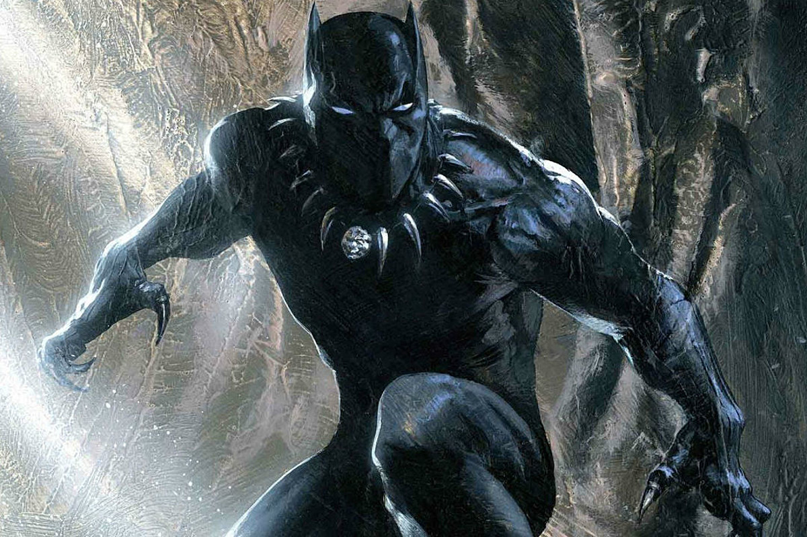

superhero’s arch nemesis
The Black Panther
super powers As chieftain, the Panther is entitled to consume a special heart-shaped herb which, in addition to his mystical, shamanistic connection with the Wakandan Panther God Bast, grants him superhumanly acute senses, enhanced strength, speed, agility, stamina, durability, healing, and reflexes.
directions to the lair of
- Frank G. Wells Building 2nd Floor 500 South Buena Vista Street
- Burbank
- California
- United States

Link back to the index